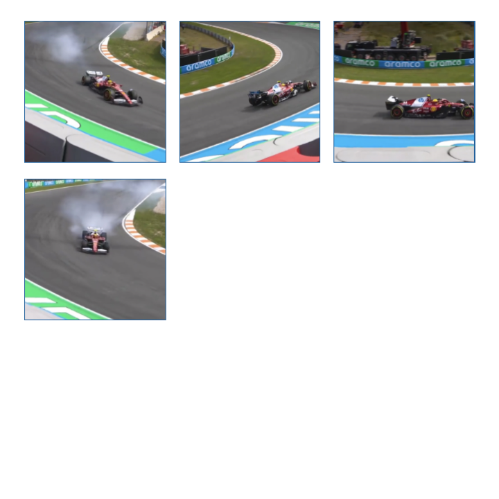
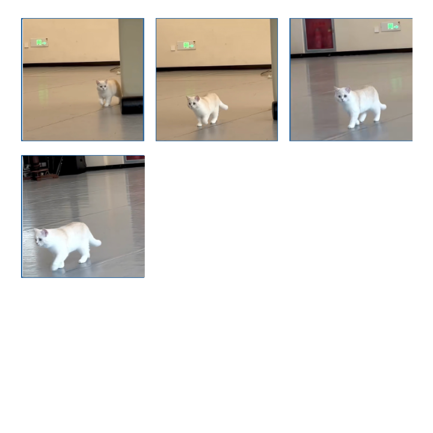
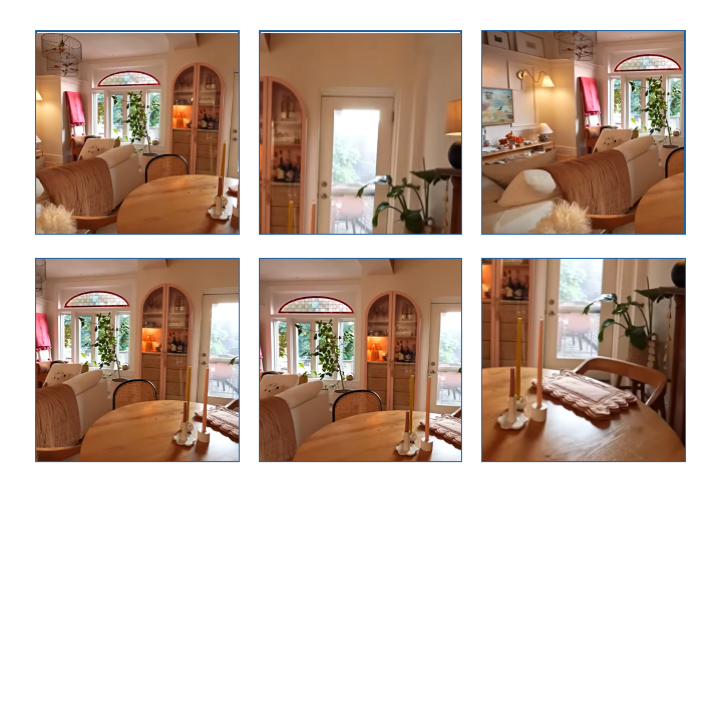
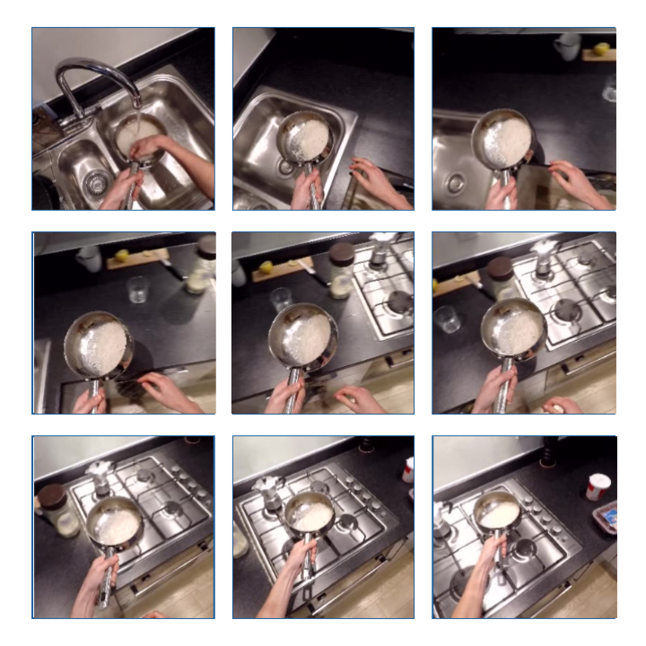
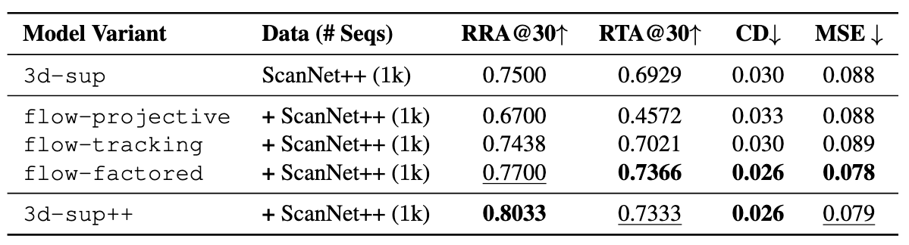
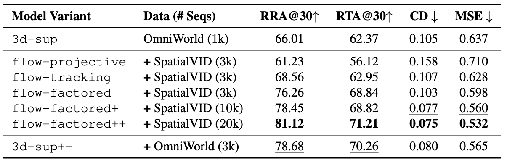
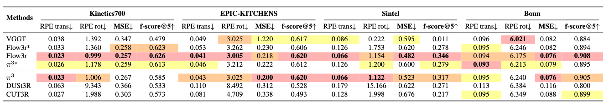

We propose flow3r, a scalable framework for visual geometry learning that leverages flow prediction to guide learning using unlabeled monocular videos. Current 3D/4D reconstruction systems primarily rely on dense geometry and pose supervision, and cannot easily generalize to diverse dynamic real-world scenes. In this work, we propose a mechanism to augment training directly from unlabeled videos, leveraging dense 2D correspondences (or 'flow') between arbitrary image pairs as supervision. Our key insight is that a factored flow prediction module that computes between two images using 'geometry latents' from one image and the 'pose latent' from other can guide visual geometry learning. We first highlight the benefits and scalability of flow supervision in controlled settings and then leverage large-scale unlabeled data to improve off-the-shelf visual geometry models. We evaluate flow3r across diverse 3D benchmarks and demonstrate competitive or state-of-the-art performance, even surpassing supervised models trained with more labeled data.
Modern visual-geometry networks first encode each image into patch tokens and a camera token (a) using a multi-view transformer backbone. Based on these latent features, there are several ways to predict dense correspondences between frames. Traditional correspondence heads (b) infer flow directly from patch features, relying purely on visual appearance and ignoring the underlying scene geometry. Alternatively, one may compute flow by explicitly projecting predicted 3D points into another view using decoded camera poses (c); however, this approach assumes static scenes and is highly sensitive to geometric prediction errors. In contrast, our factored flow mechanism (d) combines the geometry latents from the source view with the camera latents from the target view and decodes correspondences directly in latent space. This design yields geometry-aware flow, improves robustness, and naturally extends to dynamic scenes.

Flow3r predicts visual geometry using factored flow supervision, enabling scalable geometry learning from unlabeled videos. Each input image is encoded and processed by the multi-view transformer to produce camera tokens and patch tokens. For data with dense geometry and pose labels, we directly supervise the patch tokens and camera tokens with the corresponding labels. For dynamic datasets, we predict flow between two frames in a factorized manner, supervised by an off-the-shelf 2D flow prediction model UFM[1]. To obtain the factored flow, we fuse the patch features of one frame with the camera features of the other, and decode the fused representation through the DPT head to produce dense flow predictions.





We first compare our factored prediction paradigm against alternative designs and no-flow baselines on static and dynamic scenes. We include two models trained with full 3D supervision with different numbers of training sequences (denoted as 3d-sup and 3d-sup++). Next, building upon the no-flow baseline 3d-sup, we introduce three additional variants that incorporate flow supervision using different formulations: (1) flow-projective, computes flow explicitly from predicted camera poses and pointmaps via projective geometry; (2) flow-tracking, adopts a VGGT-style tracking head based on pairwise patch features; (3) flow-factored applies our proposed factored flow prediction formulation.
On ScanNet++, our factored flow prediction model (flow-factored) significantly outperforms the no-flow baseline (3d-sup), while outperforming other alternatives that leverage flow supervision. It even performs highly comparable with the fully-3D-supervised baseline (3d-sup++).

We train seven model variants on OmniWorld and SpatialVID, where OmniWorld provides 3D supervision and SpatialVID offers flow supervision. Consistent with our findings on static scenes, flow-factored with factored flow prediction considerably outperforms the no-flow baseline (3d-sup) and other flow-supervised alternatives. Also, factored flow prediction brings consistent gains by using more data.

Here we scale the training of an off-the-shelf large visual geometry network (VGGT) by leveraging our factored flow prediction strategy with unlabeled dynamic data. We evaluate performance using pose accuracy and reconstruction metrics in four dynamic datasets: Kinetics700, Epic-Kitchens, Sintel and Bonn.

In this work, we present flow3r and demonstrate that it effectively leverages in-the-wild unlabeled data by introducing factored flow prediction, advancing visual geometry learning beyond existing fully supervised methods. While our approach opens up new possibilities, several challenges remain.
First, flow3r relies on off-the-shelf models to provide pseudo-ground-truth flow supervision, and there can be domains where such 2D prediction fails, limiting the performance upper bound of flow3r. Second, although our factored flow formulation elegantly handles dynamic scenes and enables flow supervision to improve the learning of both camera motion and scene geometry, flow3r may struggle under complex scenes with multiple moving independently components. Finally, our current experiments operate at a moderate scale (~800K video sequences for flow supervision), and scaling to truly large-scale settings (~10-100M videos) presents an exciting but unexplored direction. While this is out of scope for our work due to computational constraints, we envision flow3r's formulation serving as a building block for future large-scale learning methods.